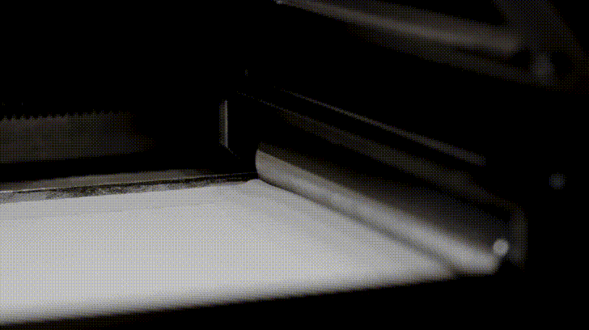
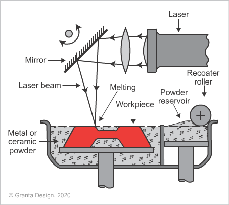
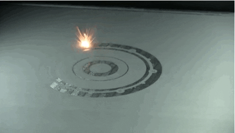

3D Metal Yazıcılar (SLM)
20. yüzyılın sonlarında geliştirilmeye başlanan 3 Boyutlu Metal Yazdırma teknolojisi(Selective Laser Melting-SLM), daha önce polimerleri 3 boyutlu yazdırabilmek için geliştirilen teknoloji ile benzerlik gösterir. Bu günlerde yaygın olarak FDM(Fused Deposition Modeling) tekniği ile filamentleri ergiterek birbiri üzerine biriktirme yapan 3 boyutlu yazıcılar kendini gösteriyor. Aslında ilk 3 boyutlu yazıcı SLS(selective Laser Sintering) adı verilen bir teknik ile polimer tozlarının ince katmanlar halinde serilerek lazer ile modelin detaylarının birbirine kaynaştırılması yöntemiyle yapılıyordu.
SLM teknolojisinde metal tozu eriyeceği için, SLS teknolojisi ile gösterdiği bazı farklılıklar vardır. SLM teknolojisinde ortama argon veya nitrojen gibi inert(kimyasal olarak tepkime göstermeyen) gazlar pompalanarak koruyucu bir atmosfer oluşturulur. Ortamın sıcaklığı yüksektir ve parçalar çıkarılmadan önce gereken soğuma süresine dikkat edilmesi gerekir.
SLM Teknolojisi Nasıl Çalışır?
Metal tozları şekilde gösterildiği gibi üretim yapılan tabla üzerinde 35-50 µm kalınlığında bir katman oluşturur. Lazer ince toz katmanın üzerinde modelin kesit alanını tarayarak metalin birbirine kaynaşmasını sağlar. Daha sonra üzerine yeni bir katman toz atılarak işlemler model bitene kadar devam eder.
3 Boyutlu Metal Yazıcılarda parçalar homojen ve neredeyse gözeneksiz bir doku oluşturduğu için geleneksel yöntemlerle üretilmiş parçalara benzerlik gösterir. SLM yazıcılarda 1.4404 Paslanmaz Çelik(316L), Alüminyum (AlSi10Mg) ve Titanyum(Ti6Al4V) malzemeleri kullanılır.
SLM 3D baskı teknolojisinde, geleneksel yöntemlerle üretilen metal parçalar ile mekanik olarak rekabet edebilen parçalar oluşturur. Bu teknolojinin geldiği son noktada hem prototiplemede hem de seri üretimde kendini göstererek endüstrinin bir çok alanında yer bulmuştur. Havacılık, Diş hekimliği, Tıbbi implantlar, Otomotiv bileşenleri ve çeşitli makine parçaları üreten bir çok sektörde SLM yazıcılara rastlayabilirsiniz.
Baskı Maliyetleri
SLM yazıcılarda kullanılan malzemeleri son teknoloji olup gelişmiş donanım gerektirir. Bu nedenle yazıcıların hem satın alınması hem de çalıştırılması pahalıdır. Çelik ve Alüminyum için ana maliyet baskı süresi ve üretim sonrası süresinden gelir. Malzeme kullanım miktarı daha az kritiktir. Daha az malzeme basmanın veya birden fazla malzeme basmanın fiyatı genellikle benzerdir.
Titanyum için hammadde maliyeti, çelik ve alüminyumdan önemli ölçüde yüksektir. Bu nedenle parçanızın ek bir kopyasının maliyete olan etkisi alüminyum ve çeliğe göre daha yüksektir.
Baskısı alınacak model, destek yapıları gerektirebilir. Bunlar aynı malzemeden yapıldığı için ve parçayla kaynaştığı için modelden ayırmak emek yoğun bir süreç ister. Karmaşık modellerde bu yapıların kaldırılmasıyla ilgili ek maliyetler de çıkabilir.
Metal Baskı Teknolojisinin Çıktıları
3 Boyutlu metal yazdırma ile geleneksel yöntemler ile üretilemeyecek geometrilerin kapısı aralanmış oldu. Bu sayede havacılık ve uzay sektöründe istenen akışı sağlamak için şimdiye kadar üretilemeyen roket motorlarının ve türbinli jet motorların yanma odaları üretilmiş oldu. Bunun dışında topoloji optimizasyonu ile aynı kuvvetlere dayanacak ama daha hafifi modellerin basılması ile ağırlık azaltabilmek mümkün oldu. 3 Boyutlu baskı teknolojilerinin çözebileceği bir çok sorun gelecekte bizi bekliyor olacak.